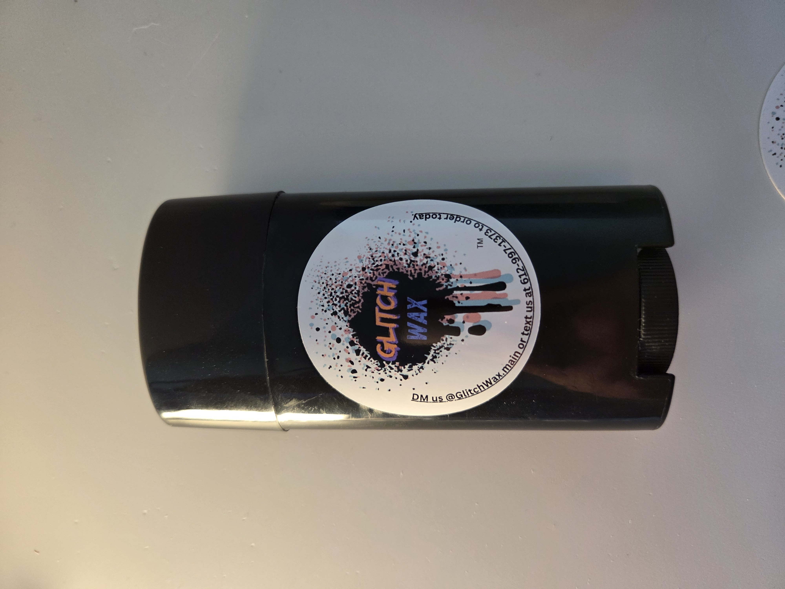

Glitch Wax Product
Stick o Wax
$8.50
Tax, shipping, and transaction fees calculated at checkout.
A premium wax, in a smart container.
The Stick o Wax comes in a deodorant-style twist-up container, making it easy to transport, easy to store, and easy to use. Apply it directly to the bottom of your board or to the obstacle you are using, put the cap back on, and throw it in your bag.
Inside the container is 2.5oz of premium Glitch Wax, crafted with a recipe designed for heat and cold resistance. Less frozen wax in the cold. Less melted wax in the heat. Just a competitive, premium product made for real riders.
Why Stick o Wax?
Built for riders who want less mess and better portability.
Stick o Wax was designed to solve a simple problem. Traditional wax works, but it is not always the cleanest thing to carry around. A smart container changes that. With a sealed cap and twist-up design, Stick o Wax stays more contained in your bag, is easier to grab between runs, and is simple to apply when you need it.
Product Highlights
Simple design. Premium performance.
Portable
The deodorant-style container makes Stick o Wax easy to carry, easy to store, and easy to keep in your bag without the same loose-wax hassle.
Easy Application
Twist it up, apply it to your board or obstacle, cap it, and keep moving. Clean, simple, and quick.
Premium Formula
Crafted with a premium recipe designed for heat and cold resistance so it performs more consistently in different conditions.
Hand Made
Glitch Wax is home crafted and hand made with real riders in mind, at a price we would actually pay ourselves.
Discreet Storage
The sealed container helps keep the wax contained when not in use, making it a smarter option for transport and storage.
2.5oz of Wax
Stick o Wax packs 2.5oz of Glitch Wax into a convenient twist-up container built for repeat use.
How to Use It
Quick to apply. Easy to carry.
Remove the cap, twist the wax up, and apply it where needed. You can apply Stick o Wax directly to the bottom of your board or to the obstacle you plan to use. Once applied, twist it back down, replace the cap, and store it in your bag.
Warnings
Use responsibly.
Do not eat this product. Do not apply it to skin, hair, or clothing. Avoid contact with eyes and mouth. Keep away from small children and pets.
Skateboarding, scootering, and similar activities can be dangerous and may result in injury or death. Always ride responsibly, use proper safety gear, and apply wax only in appropriate locations where use is allowed.
Ready to Ride?
Grab your Stick o Wax.
Premium wax, smart container, and built for real use. Head to the store to order yours.
Buy Now